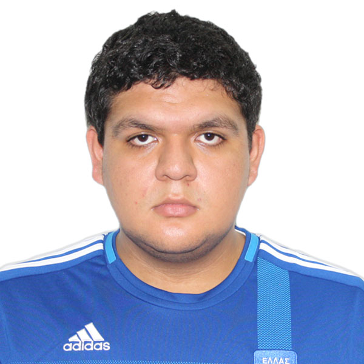

Menu Principal
Informacion
Hoja de Vida
Pelicula Favorita
Videojuego Favorito
Tutorial
Datos
Adam Jose Miguel Navas Garcia
Carne:201213547
ing. en Ciencias y Sistemas

Adam Jose Miguel Navas Garcia
Fecha de Nacimiento: 16 de Octubre de 1993
Lugar de Nacimiento: Chimaltenango, Chimaltenango
Domicilio: 5ta Calle "A", 1-22 Zona 4
Telefono: 56244486
Correo Electronico: a.j.m.n.g.u@gmail.com
Formacion Academica
2005 - 2012 Colegio La Salle, Antigua Guatemala
Actualmente: 4to. Semestre, Faculta de Ingenieria, Universidad de San Carlos
Idiomas
Español: 100%
Ingles: 100%
Japones: 12%
Logros
Septiembre 2017 - Octubre 2017 Diseño Android
Metas
Crear mi propia empresa enfocada en el desarrollo tecnologico de Guatemala
Crear Graduarme de mi Carrera
Poder conocer Japon y otras partes del mundo
Objetivos de la Carrera
Mejorar mi comprehencion del funcionamiento de diferentes lenguajes de programacion
Aprender a poner en practica mis conocimientos de software en ambitos de trabajo
Mejorar mis capacidades en general de comprehension sobre como la programacion se utiliza en todos tipos de tecnologia